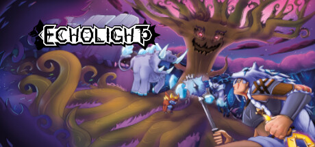
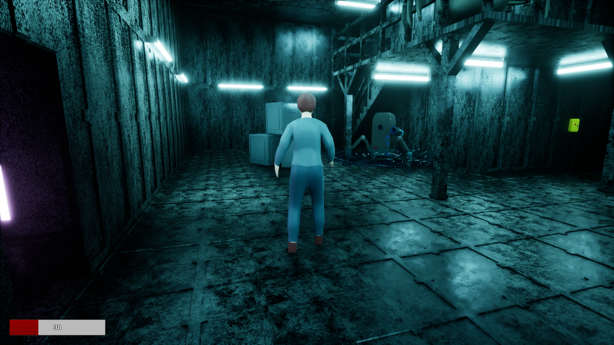

Ich beherrsche das Modellieren hauptsächlich mit Blender, habe aber auch Erfahrung mit Maya. Meine Texturierung erfolgt hauptsächlich mit Substance Painter oder Blender und Materialien erstelle ich in Substance Designer. Rigs und Animationen erstelle ich in Blender.
Ich habe Erfahrung im Projektmanagement und habe mit Codecks und Trello gearbeitet.
Spiele, die ich zuvor entwickelt habe, wurden in der Unreal Engine erstellt, und ich habe Erfahrung in der Arbeit mit GitHub.
Die beta ist ein Projekt im Studiengang "Medieninformatik und Interaktives Entertainment" an der Hochschule Mittweida. In diesem Projekt entwickeln etwa 80 Studierende in 2 Semestern zusammen ein Spiel von der Idee bis zur Veröffentlichung.
Ich war ein Projektmanager für das Art Department und war zuständig für das Character-/ Gegnerteam, das Animationsteam und das Sound Team. Dabei war ich immer für mindestens 5 Personen zuständig.
Am Ende des Projektes habe ich das Bühnenbild Team für das Abschlussevent geleitet. In diesem Team war ich für bis zu 25 Personen gleichzeitig zuständig und habe mit einer sehr knappen Deadline gearbeitet.
Als Teil des Kurses "Wissenschaft und Wirtschaft" hat ein Team von 7 Studierenden ein Webtool zur Organisation und Suche nach verschiedenen Lichtsteuerungen gemäß dem Dali-2-Standard.
In diesem Projekt war ich Teil des Design-Teams. Ich habe Designs für die verschiedenen Seiten der Website sowie das Logo des Tools erstellt.
Im Rahmen des Kurses "Game Programming" habe ich als Prüfungsleistung innerhalb eines Monats ein Spiel in der Unreal Engine erstellt. Das Spiel wurde von Grund auf neu entwickelt und umfasst mehrere Level, ein funktionierendes Menü und drei verschiedene Gegnertypen. Es ist vollständig spielbar, und alle Modelle wurden speziell für dieses Projekt angefertigt.
